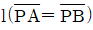
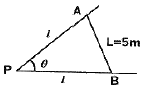
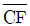
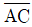
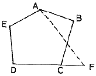
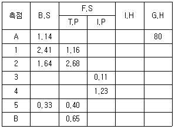
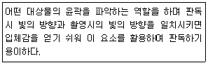
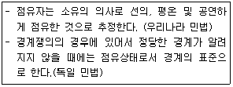

지적기사 (2011-06-12 기출문제)
1과목: 지적측량
1. 다음 지적도면의 작성방법에 해당하지 않는 것은?
- 정밀복사법
- 전자자동제도법
- 간접자사법
- 직접자사법
(정답률: 알수없음)

2. 다음 중 경계점좌표등록부를 갖춰 두는 지역에 있는 각필지의 경계점을 측정할 때에 측점번호의 부여 방법으로 옳은 것은?
- 오른쪽 위에서부터 왼쪽으로 경계를 따라 일련번호를 부여한다.
- 왼쪽 위에서부터 오른쪽으로 경계를 따라 일련번호를 부여한다.
- 오른쪽 아래에서부터 왼쪽으로 경계를 따라 일련번호를 부여한다.
- 왼쪽 아래에서부터 오른쪽으로 경계를 따라 일련번호를 부여한다.
(정답률: 알수없음)
3. 다음 중 지적도근점측량에 대한 설명으로 옳은 것은?
- 지적도근점측량의 도선은 A도선과 B도선으로 구분한다.
- 광파기측량방법과 도선법에 따른 지적도근점의 수평각 관측시 경계점좌표들록부 시행 지역에 대하여는 배각법에 따른다.
- 다각망도선법으로 지적도근점측량을 할 때에 1도선의 점의 수는 40개 이하로 한다.
- 교회망 또는 교점다각망으로 구성하여야 한다.
(정답률: 알수없음)
4. 다음 그림에서 전제장

의 길이는? (단, θ=82°21‘50“, L=5m 이다.)
- 3.364m
- 3.797m
- 3.896m
- 3.988m
(정답률: 알수없음)
5. 다음 중 평판측량방법에 따른 세부측량시 임야도를 갖춰 두는 지역에서의 거리 측정 단위가 옳은 것은?
- 5cm
- 20cm
- 40cm
- 50cm
(정답률: 82%)
6. 다음 중 분할에 따른 지상 경계를 지상건축물을 걸리게 결정할 수 있는 경우가 아닌 것은?
- 법원의 확정판결이 있는 경우
- 공공사업 등에 따라 학교용지ㆍ도로ㆍ철도용지 등의 지목으로 되는 토지를 분할하는 경우
- 국가나 지방자치단체의 장이 토지를 취득하기 위하여 분할하는 경우
- 도시개발사업 등의 사업시행자가 사업지구의 경계를 결정하기 위하여 토지를 분할하는 경우
(정답률: 알수없음)
7. 지적삼각점측량에서 원점에서부터 두 점 A, B까지의 횡선거리가 각각 8km와 16km일 때 축척계수(K)는 얼마인가? (단, R=6372.2km 이다.)
- 1.000002772
- 1.000002742
- 1.000001773
- 1.000001725
(정답률: 알수없음)
8. 다음 그림의 경계선 정정에서

의 길이는? (단,
=40m, =25m, ∠ACB=30°, ∠BCF=80°)
=25m, ∠ACB=30°, ∠BCF=80°)
- 13.3m
- 16.5m
- 21.7m
- 31.9m
(정답률: 알수없음)
9. A점에서 3km 떨어져 있는 B점을 측량하였더니 25“의 각관측 오차가 발새하였다면, B점의 위치에 얼마의 오차가 있는가?
- 약 10cm
- 약 20cm
- 약 36cm
- 약 42cm
(정답률: 알수없음)
10. 다음 중 지적삼각점성과를 관리하는 자는?
- 지적소관청
- 시ㆍ도지사
- 국토해양부장관
- 행정안전부장관
(정답률: 알수없음)
11. 다음 중 광파기측량방법과 다각망도선법에 따른 지적삼각보조점의 관측 및 계산에서 도선별 연결오차의 기준으로 옳은 것은? (단, S는 도선의 거리를 1천으로 나눈 수를 말한다.)
- (0.⑤×S)m 이하
- (0.10×S)m 이하
- (0.5×S)m 이하
- (1.0×S)m 이하
(정답률: 알수없음)
12. 다음 중 평판측량방법에 따른 세부측량의 기준 및 방법이 옳은 것은?
- 전반교회법 또는 후방교회법에 따른다.
- 측량결과 시오삼각형이 생긴 경우 외접원의 지름이 1mm 이하일 때에 그 중심을 점의 위치로 한다.
- 거리를 측정하여 도곽선의 신축량이 0.5mm 이상으로 늘어난 경우에는 실측거리에 보정향을 뺀다.
- 경계점은 기지점을 기준으로 하여 지상경계선과 도상경계선의 부합 여부를 현행법, 도상원호교회법, 지상원호교회법 또는 거리비교확인법 등으로 확인하여 정한다.
(정답률: 알수없음)
13. 광파기측량방법과 도선법에 따른 지적도근점 간의 수평거리를 2회 측정한 결과가 각각 149.95m, 150.⑤m 이었을 때 결정거리는 얼마인가?
- 149.90m
- 150.00m
- 150.10m
- 재측정
(정답률: 알수없음)
14. 다음 중 도선법에 따른 지적도근점의 각도를 방위각법으로 측정한 결과가 허용범위 이내인 경우 오차의 배분 방법으로 옳은 것은?
- 변의 수에 비례하여 각 측선의 방위각에 배분한다.
- 거리 반수에 비례하여 각 측선의 방위각에 배분한다.
- 측선장에 반비례하여 각 측선의 관측각에 배분한다.
- 종ㆍ횡선차의 절대값이 비례하여 각 측선의 관측각에 배분한다.
(정답률: 알수없음)
15. 다음 구소삼각지역의 직각좌표계 원점 중 평면직각종횡선 수치의 단위를 간(間)으로 하는 것은?
- 조본원점
- 고초원점
- 율곡원점
- 망산원점
(정답률: 알수없음)
16. 다음 중 경위의측량방법과 평판측량방법으로 세부측량을 할 때 측량준비 파일 작성에 공통적으로 포함하는 사항이 아닌 것은?
- 측량대상 토지의 지번 및 지목
- 인근 토지의 경계점의 좌표 및 경계선
- 행정구역과 그 명칭
- 도곽선과 그 수치
(정답률: 알수없음)
17. 다음 중 착오(과대오차)에 해당하는 것은?
- 토탈스테이션의 수평축이 수직축과 지갂을 이루지 않아 발생한 오차
- 토탈스테이션의 망원경 축과 수준기포관 축이 평행하지 않아 발생한 오차
- 토탈스테이션으로 측정한 거리 169.56m를 196.56m로 잘못 읽어 발생한 오차
- 토탈스테이션의 조정불량 및 측량사의 습관에 의하여 발생한 오차
(정답률: 알수없음)
18. 다음 중 광파기측량방법에 따른 지적삼각점의 관측과 계산 기준으로 옳지 않은 것은?
- 광파측거기는 표준편차가 ±(5mm+5ppm) 이상인 정밀 측거기를 사용한다.
- 점간거리는 5회 측정하여 그 측정치의 최대치와 최소치의 교차가 평균치의 10만분의 1 이하일 때에는 그 평균치를 측정거리로 한다.
- 연직각은 각 측점에서 정반(正反)으로 각 2회 관측한다.
- 연직각의 관측치의 최대치와 최소치의 교차가 40초 이내일 때에는 그 평균치를 연직각으로 한다.
(정답률: 알수없음)
19. 다음 중 축척 1/1200 지역에서 경위의측량방법과 교회법에 따른 지적삼각보조점의 관측 및 계산에서 2개의 삼각형으로부터 계산한 위치의 연결교차가 최대 얼마 이하일 때에 그 평균치를 지적삼각보조점의 위치로 할 수 있는가?
- 0.01m 이하
- 0.03m 이하
- 0.10m 이하
- 0.30m 이하
(정답률: 알수없음)
20. 전자면적측정기로 도상에서 2회 측정한 면적의 평균이 250m2일 때, 교차의 허용면적이 최대 얼마 이하일 때에 평균치를 측정면적으로 할 수 있는가? (단, 축척은 1200분의 1이다.)
- 8.6m2
- 9.0m2
- 10.0m2
- 12.8m2
(정답률: 알수없음)
2과목: 응용측량
21. GPS에서 DOP에 대한 설명으로 옳은 것은?
- 도플러 이동
- 위성궤도의 결정
- 특정한 순간의 위성배치에 대한 기하학적 강도
- 위성시계와 수신기 시계의 조합으로부터 계산되는 시간오차의 표준편차
(정답률: 알수없음)
22. GPS에서 사용되는 L1과 L2신호의 주파수로 옳은 것은?
- 150MHz와 400MHz
- 420.9MHz와 585.53MHz
- 1575.42MHz와 1227.60MHz
- 1832.12MHz와 3236.94MHz
(정답률: 알수없음)
23. 1/25,000의 지형도에서 등고선으로 나타낼 수 있는 최대의 경사각은 얼마인가? (단, 등고선의 위치 오차는 0.25mm이고 등고선 간격은 10m 이다.)
- 57°59‘41“
- 43°30‘41“
- 38° 39‘41“
- 14°30‘41“
(정답률: 70%)
24. 터널이 긴 경우 굴진 공정기간의 간축을 위하여 중간에 수직 터널이나 경사 터널을 설치하고 본 터널과의 좌표를 일치시키기 위하여 실시하는 측량은?
- 지하수준측량
- 터널내 고저측량
- 터널내 중심선측량
- 터널내외 연결측량
(정답률: 알수없음)
25. 원심력에 의한 곡선부의 차량탈선을 방지하기 위하여 곡선부의 횡단 노면 회측부를 높여주는 것은?
- 확폭
- 캔트
- 종거
- 완화구간
(정답률: 알수없음)
26. 다음 중 GPS측량에서 의사거리(Pseudo-range)에 대한 설명으로 옳지 않은 것은?
- 인공위성과 지상수신기 사이의 거리 측정값이다.
- 대류권과 이온층의 신호지연으로 인한 오차의 영향력이 제거된 관측값이다.
- 기하학적인 실제거리와 달라 의사거리라 부른다.
- 인공위성에서 송신되어 수신기로 도착된 신호의 송신시간을 PRN 인식 코드로 비교하여 측정한다.
(정답률: 67%)
27. 터널측량의 작업 단계 중 지표에 설치된 중심선을 기준으로 하여 터널의 입구에서 굴착을 시작하여 굴착이 진행됨에 따라 터널내의 중심선을 설정하는 작업은?
- 지표설치
- 지하설치
- 조사
- 예측
(정답률: 알수없음)
28. 수준측량 야장에서 측점 5의 기계고와 지반고는? (단, 표의 단위는 m이다.)

- 79.71m, 80.95m
- 79.91m, 80.63m
- 81.28m, 80.95m
- 82.39m, 80.63m
(정답률: 알수없음)
29. 복곡선에 대한 설명으로 옳지 않은 것은?
- 반지름이 다른 2개의 단곡선이 그 접속점에서 공통접선을 갖는다.
- 철도 및 도로에서 복곡선 사용은 승객에게 불쾌감을 줄 수 있다.
- 반지름의 중심은 공통접선과 서로 다른 방향에 있다.
- 산지의 특수한 도로나 산길 등에서 설치하는 경우가 많다.
(정답률: 알수없음)
30. 수치사진측량에서 둘 또는 그 이상의 사진상에서 공액점을 찾는 영상정합방법이 아닌 것은?
- 영역기준 정합법
- 형상기준 정합법
- 관계형 정합법
- 탐색형 정합법
(정답률: 알수없음)
31. A점의 표고가 128m, B점의 표고가 155m인 등경사 지형에서 A점으로부터 표고 130m 등고선까지의 거리는? (단, AB의 거리는 250m이다.)
- 2.00m
- 18.52m
- 111.11m
- 203.70m
(정답률: 알수없음)
32. 항공사진 판독의 일반적인 순서로 옳은 것은?
- 촬영의 계획→판독기준의 작성→현지조사→촬영과 사진작성→판독→정리
- 촬영의 계획→촬영과 사진작성→판독기준의 작성→판독→현지조사→정리
- 판독기준의 작성→촬영의 계획→현지조사→촬영과 사진작성→판독→정리
- 판독기준의 작성→촬영의 계획→촬영과 사진작성→현지조사→판독→정리
(정답률: 알수없음)
33. 다음 설명에 해당되는 판독의 요소는?

- 색조
- 음영
- 모양
- 질감
(정답률: 알수없음)
34. 사진측량에 있어서 편위수정에 대한 설명으로 틀린 것은?
- 사진의 경사를 수정한다.
- 축척을 통일시키고 변위를 제거한다.
- 편위수정 조건에는 샤임플러그의 조건이 있다.
- 편위수정에는 1개의 표정점이 필요하다.
(정답률: 알수없음)
35. 지형도의 도식과 기호가 만족하여야 할 조건에 대한 설명으로 옳지 않은 것은?
- 간단하면서도 그리기 용이해야 한다.
- 지물의 종류가 기호로써 명확히 판별될 수 있어야 한다.
- 지도가 깨끗이 만들어지며 도식의 의미를 잘 알 수 있어야 한다.
- 지도의 사용목적과 축척의 크기에 관계없이 모두 동일한 모양과 크기로 빠짐없이 표시하여야 한다.
(정답률: 알수없음)
36. 원곡선 설치시 교각이 60°. 반지음이 100m, B,C=No.5+8m일 때 곡선의 E.C까지의 거리는? (단, 중심 말뚝간격은 20m이다.)
- 152.7m
- 162.7m
- 212.7m
- 272.5m
(정답률: 알수없음)
37. 사진 판독에 있어 삼림지역에서 표층토양의 함수율에 의하여 사진의 색조가 변화하는 현상은?
- 소일 마크(Soil mark)
- 왜곡 마크(Distortion mark)
- 쉐이드 마크(Shade mark)
- 플로팅 마크(Floating mark)
(정답률: 알수없음)
38. 다음 중 원격센서(remote, sensor)를 능동적 센서와 수동적 센서로 구분할 때, 능동적 센서에 속하는 것은?
- TM(thematic mapper)
- 천연색 사진
- MSS(multi-soectral scanner)
- SLAR(side looking airborne rader)
(정답률: 알수없음)
39. 다음 중 완화곡선에 대한 설명으로 옳지 않은 것은?
- 곡선반지름은 완화곡선의 시점에서 무한대, 종점에서 원곡선의 반지름으로 된다.
- 완화곡선의 접선은 시점에서 원호에, 종점에서 직선에 접한다.
- 완화곡선에 연한 곡선반지름의 감소율은 캔트의 증가율과 동률로 된다.
- 종점에 있는 캔트는 원곡선의 캔트와 같게 된다.
(정답률: 알수없음)
40. 거리 80m되는 곳에 표척을 세워 기포가 중앙에 있을 때와 기포관의 눈금이 5눈금 이동했을 때 표척 읽음값의 차이가 0.09m 이었다면 이 기포관의 곡률반경은? (단, 기포관 한 눈금의 간격은 2mm이다.)
- 8.97m
- 9.07m
- 9.37m
- 9.57m
(정답률: 알수없음)
3과목: 토지정보체계론
41. 다음 중 지적부서가 아닌 부서에 지적전산프로그램 설치를 승인하여 업무에 활용하도록 하는 사항에 해당하지 않는 것은?
- 일필지기본사항 조회
- 토지이동연혁 조회
- 소유권변동연혁 조회
- 지적측량스행자 조회
(정답률: 알수없음)
42. 다음 중 데이터베이스의 구축에 따른 장점으로 옳지 않은 것은?
- 같은 자료에 동시 접근이 가능하다.
- 통제의 분산화를 이룰 수 있다.
- 자료의 중복을 방지할 수 있다.
- 자료의 효율적인 관리가 가능하다.
(정답률: 알수없음)
43. 다음 중 래스터데이터의 압축방법으로 각 행마다 왼쪽에서 오른쪽으로 진행하면서 처음 시작하는 셀과 끝나는 셀까지 동일한 수치값을 갖는 셀들을 묶어 압축하는 것은?
- Run-length code 기법
- Quadtree 기법
- Chain code 기법
- Block code 기법
(정답률: 알수없음)
44. 다음 중 지적행정에 Web LIS를 도입함으로써 발생하는 효과와 가장 거리가 먼 것은?
- 시간과 거리에 제한은 받으나 신속한 민원처리가 가능하다.
- 업무별 분산처리를 실현할 수 있다.
- 정보와 자원을 공유할 수 있다.
- 업무처리에 있어 중복을 피할 수 있다.
(정답률: 100%)
45. 다음 중 지적 관련 속성정보를 데이터베이스에 입력하기에 가장 적합한 장비는?
- 디지타이저
- 스캐너
- 키보드
- 플로터
(정답률: 알수없음)
46. 다음 중 도형자료를 컴퓨터에 입력할 때 발생할 수 있는 오차에 해당하지 않는 것은?
- 기계적인 오차
- 구상구조화에 따른 오차
- 좌표 독취 과정에서의 오차
- 벡터자료 변환 과정에서의 오차
(정답률: 알수없음)
47. 위상모형 중 인접성(neighborhood)에 대한 설명에 해당하지 않는 것은?
- 서로 이웃하여 있는 폴리곤 간의 관계를 의미한다.
- 공간 객체 간의 상호 인접성에 기반을 둔 분석에 필수적이다.
- 이웃하여 있는 폴리곤들의 경우 상, 하, 좌, 우와 같은 상대적 위치성 또한 파악하여야 할 중요한 요소다.
- 하나의 지점에서 또 다른 지점으로의 이동시 경로선정 또는 자원의 배분에 활용된다.
(정답률: 알수없음)
48. 다음 중 사용자권한 등록파일에 등록하는 사용자의 비밀번호 설정 기준으로 옳은 것은?
- 영문을 포함하여 3자리부터 12자리까지의 범위에서 사용자가 정하여 사용한다.
- 4자리부터 12자리까지의 범위에서 사용자가 정하여 사용한다.
- 영문을 포함하여 5자리부터 16자리까지의 범위에서 사용자가 정하여 사용한다.
- 6자리부터 16자리까지의 범위에서 사용자가 정하여 사용한다.
(정답률: 알수없음)
49. 다음 중 래스터 자료 포맷에 해당하지 않는 것은?
- BSQ(Band SeQuential)
- BIA(Band Inerleaved by Area)
- BIL(Band Inerleaved by Line)
- BIP(Band Inerleaved by Pixel)
(정답률: 알수없음)
50. 다음 중 ISO 19133:2007(지리정보의 품질원칙)에서 점의 한 품질요소에 해당하지 않는 것은?
- 연혁
- 완전성
- 논리적 일관성
- 시간 정확성
(정답률: 알수없음)
51. 다음 중 필지중심토지정보시스템(PBLIS)의 주요 업무 내용에 해당하지 않는 것은?
- 지적공부관리업무
- 지적측량성과작성업무
- 지적측량업무
- 공시지가관리업무
(정답률: 알수없음)
52. 스파게티(Spaghetti)모형에 대한 설명이 옳지 않은 것은?
- 하나의 점이 XㆍY 좌표를 기본으로 하고 있어 다른 모형에 비하여 구조가 복잡하고 이해하기 어렵다.
- 데이터 파일을 이용한 지도를 인쇄하는 단순작업의 경우에 효율적인 도구로 사용되었다.
- 상호 연관성에 관한 정보가 없어 인접한 객체들의 특징과 관련성, 연결성을 파악하기 힘들었다.
- 객체들 간에 정보를 갖지 못하고 국수 가락처럼 좌표들이 길게 연결되어 있는 구조를 말한다.
(정답률: 알수없음)
53. 지적업무전산화를 목표로 지적법을 전면 개정하여 대장의 속성에서 필지별 고유번호, 지목, 사유, 소유권변동원인등을 최초로 코드화한 시기로 옳은 것은?
- 1950.12.1
- 1975.12.31
- 1995.1.5
- 2001.1.27
(정답률: 알수없음)
54. 다음 중 OGC에 대한 설명으로 옳지 않은 것은?
- OGIS를 개발하고 추진하는데 필요한 합의된 절차를 정립할 목적으로 비영리의 협회형태로 설립되었다.
- 지리정보를 활용하고 관련 응용분야를 주요 업무로 하고 있는 공공기관 및 민간기관으로 구성ㄱ된 컨소시움이다.
- 지리정보와 관련된 여러 처리방식에 대하여 개방형 시스템적인 접근을 시도하였다.
- 지리정보를 객체지향형으로 정의하기 위한 명세서라 할 수 있다.
(정답률: 알수없음)
55. 다음 중 토지정보체계의 데이터베이스관리시스템을 구축하기 위한 논리적 데이터베이스 모형이 아닌 것은?
- 위상형(topological)
- 관계형(relational)
- 네트워크형(network)
- 계층형(hierarchical)
(정답률: 73%)
56. 다음 중 데이터베이스 시스템의 기본적인 구성요소로서, 데이터의 구조와 제약 조건에 대한 명세를 전반적으로 기술한 것을 일컫는 것은?
- 스키마
- 메타데이터
- 필지식별자
- 데이터 모델
(정답률: 알수없음)
57. 다음 중 TIGER파일의 도형자료를 수치지도 데이터베이스로 구축한 국가는?
- 미국
- 한국
- 호주
- 캐나다
(정답률: 알수없음)
58. 다음 중 서로 다른 체계를 간의 자료 공유를 위한 공간 자료교환 표준으로 대표적인 것은?
- CEN/TC 287
- SDTS
- DX-90
- Z39-50
(정답률: 알수없음)
59. 다음 중 종이형태의 지적도면을 수동독취기(Digitizer)를 이용하여 입력할 경우 자료 형태로 옳은 것은?
- 메쉬(Mesh) 자료
- 벡터(Vector) 자료
- 셀(Cell) 자료
- 래스터(Raster) 자료
(정답률: 알수없음)
60. 다음 중 벡터 데이터 모델에 대한 설명으로 옳은 것은?
- 기본적인 공간 단위는 공간 현상을 묘사하기 위한 격자 형태이다.
- 표현하는 지역의 정확한 위치 표현을 위하여 연속적인 좌표계의 사용을 전제로 한다.
- 각 픽셀에 표본값을 갖도록 2차원의 행렬 형태로 저장하는 구조이다.
- 다양한 모델링 작업을 쉽게 수행할 수 있다.
(정답률: 알수없음)
4과목: 지적학
61. 다음 중 우리나라에서 최초로 ‘지적’이라는 용어가 법률상에 등장한 시기로 옳은 것은?
- 1895년
- 19⑤년
- 1910년
- 1950년
(정답률: 알수없음)
62. 다음 중 지적법의 변천 과정을 시기가 빠른 순서대로 옳게 나열한 것은?
- 토지조사령→토지대장규칙→조선임야조사령→지세령→지적법
- 토지조사법→토지조사령→조선임야조사령→임야대장규칙→지적법
- 토지조사령→토지조사법→토지대장규칙→조선임야대장규칙→지적법
- 지세령→토지조사법→토지대장규칙→조선임야조사령→지적법
(정답률: 알수없음)
63. 다음 중 토지대장의 일반적인 편성 방법이 아닌 것은?
- 물적 편성주의
- 인적 편성주의
- 연대적 편성주의
- 구역별 편성주의
(정답률: 알수없음)
64. 다음 중 토지조사사업의 내용에 해당하지 않는 것은?
- 토지의 지형ㆍ지모조사
- 토지의 소유권 조사
- 토지의 가격조사
- 토지의 지질조사
(정답률: 알수없음)
65. 토지조사사업 당시 확정된 소유자가 다른 토지 사이에 사정된 경계선을 무엇이라 하였는가?
- 지계선
- 강계선
- 구획선
- 지역선
(정답률: 알수없음)
66. 1807년에 나폴레옹이 지적법을 발효시키고 대단지 내의 필지에 대한 조사를 위하여 발족된 위원회에서 프랑스 전 국토에 대하여 시행한 세부 사업에 해당하지 않는 것은?
- 소유자 조사
- 필지측량 실시
- 필지별 생산량 조사
- 축척 1/5000 지형도 작성
(정답률: 64%)
67. 다음 중 지적의 원리에 대한 설명으로 옳지 않은 것은?
- 공(公)기능성의 원리는 지적공개주의를 말한다.
- 민주성의 원리는 주민참여의 보장을 말한다.
- 능률성의 원리는 중앙집권적 통제를 말한다.
- 정확성의 원리는 지적불부합지의 해소를 말한다.
(정답률: 알수없음)
68. 다음 중 대한제국시대에 양전사업을 위해 설치된 최초의 독립된 지적행정관청은?
- 양지아문
- 지계아문
- 탁지부
- 임시재산정리국
(정답률: 64%)
69. 다음 중 고려의 전시과(田柴科)와 조선의 과전법 및 직전법의 효시가 된 신라시대의 토지제도는?
- 정전제
- 결부제
- 역분전
- 관료전
(정답률: 알수없음)
70. 다음 중 지적의 역할과 가장 거리가 먼 것은?
- 감정평가 자료
- 공시기능
- 사실관계증명
- 소유권원의 확립
(정답률: 알수없음)
71. 다음 중 도해지적에 비하여 수치지적이 갖는 특징으로 옳지 않은 것은?
- 오측이 쉽게 발견된다.
- 컴퓨터에 입력시켜 후속 측량에 이용할 경우 임의 축척으로 도면을 출력할 수 있다.
- 정밀도가 높다.
- 지표상에 복원할 때 본래 측량 당시의 정확도로 다시 재현할 수 있다.
(정답률: 알수없음)
72. 다음 중 아래와 관련있는 일필지의 경계설정 기준에 관한 설명에 해당하는 것은?

- 경계가 불분명하고 점유형태를 확정할 수 없을 때 분쟁지를 물리적으로 평분하여 쌍방의 토지에 소유시킨다.
- 현재 소유자가 각자 점유하고 있는 지역이 명확한 1개의 선으로 구분되어 있을 때, 이 선을 경계로 한다.
- 새로이 결정하는 경계가 다른 확실한 자료와 비교하여 공평, 합당하지 못할 때에는 상당한 보완을 한다.
- 점유형태를 확인할 수 없을 때 먼저 등록한 소유자에게 소유시킨다.
(정답률: 60%)
73. 다음 중 우리나라 지적제도의 원리에 해당하는 것은?
- 형식적 심사주의
- 소극적 등록주의
- 직권 등록주의
- 성립 요건주의
(정답률: 알수없음)
74. 토지조사사업에서 지목은 모두 몇 종류로 구분하였는가?
- 15종
- 18종
- 21종
- 24종
(정답률: 80%)
75. 다음 중 토렌스시스템의 기본이론에 해당하지 않는 것은?
- 거울이론
- 보장이론
- 커튼이론
- 보험이론
(정답률: 알수없음)
76. 다음 중 소극적 등록제도의 설명에 해당하는 것은?
- 토지의 등록은 신청에 의한다.
- 토지등록의 효력이 정부에 의해 보장된다.
- 국가가 직권으로 조사하여 등록한다.
- 선의의 제3자에 대하여도 법적으로 보호된다.
(정답률: 알수없음)
77. 다음 중 임야조사사업 당시의 조사 및 측량기관은?
- 부(府), 면(面)
- 임야심사위원회
- 임시토지조사국장
- 도지사
(정답률: 알수없음)
78. 양전법 개정을 위한 새로운 양전방안으로, 정전제의 시행을 전제로 하는 방량법과 어린도법을 주장한 학자는?
- 정약용
- 서유구
- 이기
- 정약전
(정답률: 75%)
79. 1970년에 공포된 지적측량사규정 시행 당시 국가공무원으로서 그 소속 관서의 지적측량 사무에 종사하는 자를 무엇이라 하였는가?
- 대행측량사
- 상치측량사
- 감정측량사
- 지정측량사
(정답률: 알수없음)
80. 다음 토지조사사업 당시의 지목 중 면세지에 해당하지 않는 것은?
- 사사지
- 분묘지
- 철도용지
- 수도선로
(정답률: 알수없음)
5과목: 지적관계법규
81. 다음 중 국토의 계획 및 이용에 관한 법률상 특별시장ㆍ광역시장ㆍ시장 또는 군수의 허가를 받아야 하는 개발행위가 아닌 것은? (단, 도시계획사업에 의하는 경우는 고려하지 않는다.)
- 경작을 위한 토지의 형질변경
- 토석의 채취
- 건축물의 건축 또는 공작물의 설치
- 관리지역에 물건을 1개월 이상 쌓아놓는 행위
(정답률: 알수없음)
82. 다음 중 공익사업을 위한 토지 등의 취득 및 보상에 관한 법률을 적용하여야 하는 경우는?
- 국토해양부장관이 기본측량을 실시하기 위하여 토지를 사용함에 따른 손실보상에 관한 경우
- 지적소관청이 측량을 방해하는 장애물을 제거하는 경우
- 축척변경위원회가 축척변경에 따른 청산금을 산정하는 경우
- 지적측량수행자가 측량성과를 검사하기 위하여 타인의 토지에 출입하는 경우
(정답률: 알수없음)
83. 다음 중 지적측량수행자가 손배배상책임을 보장하기 위하여 보증보험에 가입하여야 하는 금액 기준으로 옳은 것은?
- 지적측량업자 : 1억원 이상
- 지적측량업자 : 5천만원 이상
- 대한지적공사 : 10억원 이상
- 대한지적공사 : 5억원 이상
(정답률: 알수없음)
84. 다음 중 지적소관청이 지적삼각보조점성과표 및 지적도 근점성과표에 기록ㆍ관리하여야 하는 사항에 해당하지 않는 것은?
- 직각좌표계 원점명
- 지적위성기준점의 명칭
- 표지의 재질
- 소재지와 측량연월일
(정답률: 알수없음)
85. 다음 중 중앙지적위원회의 심의ㆍ의결사항으로 옳은 것은?
- 토지등록업무의 개선
- 지적기술자의 양성방안
- 지적기술자의 징계
- 지적측량 적부심사 청구사항
(정답률: 알수없음)
86. 다음 중 신규등록 신청에 필요한 첨부 서류에 해당하지 않는 것은?
- 형질변경허가서
- 법원의 확정판결서 정본 또는 사본
- 소유권을 증명할 수 있는 서류의 사본
- 공유수면 관리 및 매립에 관한 법률에 따른 준공검사 확인증 사본
(정답률: 알수없음)
87. 다음 중 지목의 구분이 옳지 않은 것은?
- 제조업을 하고 있는 공장시설물의 부지는 ‘공장용지’로 한다.
- 고속도로의 휴게소 부지는 ‘도로’로 한다.
- 국토의 계획 및 이용에 관한 법률 등 관계 법령에 따른 택지조성공사가 준공된 토지는 ‘대’로 한다.
- 온수ㆍ약수ㆍ석유류를 일정한 장소로 운송하는 송수관ㆍ송유관 및 저장시설의 부지는 ‘광천지’로 한다.
(정답률: 알수없음)
88. 다음 중 축척변경에 따른 청산금의 산정에 관한 설명으로 옳지 않은 것은?
- 청산금을 산정한 결과 증가된 면적에 대한 청산금의 합계와 감소된 면적에 대한 청산금의 합계에 차액이 생긴 경우, 부족액은 그 지방자치단체가 부담한다.
- 청산금은 토지대장에 등록된 필지별 면적에 지번별 제곱미터당 금액을 곱하여 산출한다.
- 지적소관청은 수령통지를 한 날부터 6개월 이내에 청산금을 지급하여야 한다.
- 청산금을 청산할 때에는 축척변경위원회의 의결을 거쳐 지번별 제곱미터당 금액을 정하여야 한다.
(정답률: 알수없음)
89. 다음 중 지적도ㆍ임야도ㆍ경계점좌표등록부에 공통으로 등록되는 사항으로만 나열된 것은?
- 토지의 소재, 지목
- 토지의 소재, 지번
- 도면의 제명, 경계
- 지적도면의 번호, 지목
(정답률: 알수없음)
90. 다음 중 광역계획권을 지정한 날부터 3년이 지날 때까지 관할 시장 또는 군수로부터 광역도시계획의 승인 신청이 없는 경우 광역도시계획의 수립권자는?
- 관할 도지사
- 국토해양부장관
- 국무총리
- 대통령
(정답률: 알수없음)
91. 다음 중 등기신청에 필요한 서면에 해당하지 않는 것은?
- 신청서
- 소유권의 보존 등기를 신청하는 경우 신청인의 주소를 증명하는 서면
- 토지거래계약 허가구역인 경우 토지거래허가서
- 대리인이 등기를 신청할 때에는 그 권한을 증명하는 서면
(정답률: 알수없음)
92. 다음 중 축척변경위원회의 구성에 대한 설명으로 옳은 것은?
- 5명 이상 10명 이하의 위원으로 구성하되, 위원의 3분의 2 이상을 축척변경 시행지역의 토지소유자로 하여야 한다.
- 축척변경 시행지역의 토지소유자가 7명 이하일 때 토지소유자 전원을 위원으로 위촉하여야 한다.
- 위원장은 위원 중에서 지적에 관하여 전문지식을 가지고 해당 지역의 사정에 정통한 사람 중에서 국토해양부장관이 지명한다.
- 위원은 지적소관청이 위촉한다.
(정답률: 알수없음)
93. 다음 중 토지소유자가 지적소관청에 토지의 분할을 신청 할 수 있는 경우에 해당하지 않는 것은?
- 소유권이전, 매매 등을 위하여 필요한 경우
- 토지이용상 불합리한 지상경계를 시정하기 위한 경우
- 도시관리계획선에 따라 토지를 분할하는 경우
- 지적공부에 등록된 1필지의 일부가 형질변경 등으로 용도가 변경된 경우
(정답률: 알수없음)
94. 다음 중 바다로 된 토지의 등록말소 신청에 대한 설명으로 옳지 않은 것은?
- 지적소관청은 토지소유자가 지적공부의 등록말소 신청의 통지를 받은 날부터 90일 이내에 등록말소 신청을 하지 아니하면 대통령령으로 정하는 바에 따라 등록을 말소한다.
- 지적소관청은 지적공부에 등록된 토지지가 지형의 변화로 바다로 되어 다른 지목의 토지로 될 가능성이 없는 경우 토지소유자에게 지적공부의 등록말소 신청을 하도록 통지하여야 한다.
- 지적소관청은 토지가 지형의 변화 등으로 다시 토지가 된 경우라도 등록말소된 토지를 회복등록할 수 없다.
- 지적소관청은 등록말소한 경우 그 정리 결과를 토지소유자 및 해당 공유수면의 관리청에 통지하여야 한다.
(정답률: 알수없음)
95. 다음 중 지목을 ‘체육용지’로 설정할 수 없는 것은?
- 야구장
- 승마장
- 경륜장
- 경마장
(정답률: 알수없음)
96. 다음 중 토지의 합병을 신청할 수 없는 경우에 해당하지 않는 것은?
- 합병하려는 토지의 지적도 및 임야도의 축척이 서로 다른 경우
- 합병하려는 토지가 등기된 토지와 등기되지 아니한 토지인 경우
- 합병하려는 토지의 지번부여지역, 지목 또는 소유자가 서로 다른 경우
- 합병 신청과 동시에 토지의 용도에 따라 분할 신청을 하는 경우
(정답률: 알수없음)
97. 다음 중 지번의 구성 및 부여방법에 대한 설명으로 옳지 않은 것은?
- 도시개발사업 등이 준공되기 전에 지번을 부여하는 때에는 사업 등의 신고시 제출한 지번별조서를 따르되 지적확정측량의 지번부여 방법에 따라 지번을 부여하여야 한다.
- 지번은 아라비아 숫자로 표기하되, 임야대장 및 임야도에 등록하는 토지의 지번은 숫자 앞에 ‘산’자를 붙여야 한다.
- 지번은 북서에서 남동으로 순차적으로 부여한다.
- 신규등록 대상토지가 여러 필지로 되어 있는 경우 그 지번부여지역의 최종 본번의 다음 순번부터 본번으로 하여 순차적으로 지번을 부여할 수 있다.
(정답률: 알수없음)
98. 다음 중 지적공부의 보관방법 기준에 대한 설명으로 옳은 것은?
- 카드로 된 대장은 지적공부 보관상자에 넣어 보관하여야 한다.
- 부책으로 된 대장은 100장 단위로 바인더(binder)에 넣어 보관하여야 한다.
- 일람도ㆍ지번색인표 및 지적도면은 지번부여지역별로 도면번호순으로 보관하되, 각 장별로 보호대에 넣어야 한다.
- 지적공부 보관상자는 벽과 바닥에 밀착시켜 놓아야 한다.
(정답률: 알수없음)
99. 다음 중 토지거래계약에 관한 허가구역의 지정에 대한 설명으로 옳지 않은 것은?
- 토지의 투기적인 거래가 성행하거나 지가가 급격히 상승하는 지역에 대하여 지정할 수 있다.
- 국토해양부장관은 토지거래계약에 관한 허가구역으로 지정하려면 중앙도시계획위원회의 심의를 거쳐야 한다.
- 토지거래계약에 관한 허가구역으로 지정된 지역의 시장ㆍ군수ㆍ구청장은 7일 이상 공고하여야 한다.
- 토지거래계약에 관한 허가구역으로 지정한 때에는 국토해양부장관이 시장ㆍ군수ㆍ구청장에게 공고 내용을 통지하여야 한다.
(정답률: 알수없음)
100. 다음 중 대한지적공사의 사업에 해당하지 않는 것은?
- 지적측량성과검사측량
- 지적재조사사업
- 지적제도 및 지적측량에 관한 연구ㆍ교육 등 지원사업
- 공사의 목적을 달성하기 위하여 필요한 사업으로 정관으로 정하는 사업
(정답률: 알수없음)